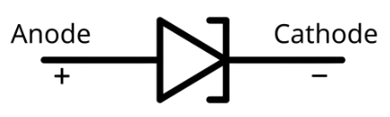

A tunnel diode is a heavily doped p-n junction. Its depletion region is extremely thin, so electrons can tunnel through the barrier.

I-V Characteristic
Voltage: 0.08 V
Current: calculating...
Region: tunneling current increases
Differential resistance: positive
Tunnel Diode Simulation: Quantum Tunneling and Negative Resistance
This interactive 3D physics simulation demonstrates the tunnel diode, a semiconductor device that uses quantum tunneling.
Unlike an ordinary diode, a tunnel diode has a region where increasing voltage causes current to decrease.
This is called negative differential resistance.
Main Parts of the Tunnel Diode Simulation
1. Heavily doped p-n junction: creates an extremely thin depletion region. 2. Quantum tunneling barrier: electrons can pass through the barrier even when they do not have enough classical energy. 3. Peak current: tunneling is strongest when occupied states align with empty states. 4. Valley current: tunneling decreases after the energy states become misaligned. 5. Normal diode current: at higher forward voltage, ordinary conduction increases again.
Simple tunneling idea:
Tunneling probability decreases rapidly as barrier width increases.
Physics Meaning
In a tunnel diode, electrons behave like quantum waves. If the depletion barrier is thin enough,
part of the electron wavefunction can penetrate and pass through the barrier. This produces tunneling current.
At low forward bias, energy states align and current increases. At a larger bias, the states become misaligned,
so tunneling current decreases. This creates the negative resistance region.
Why Tunnel Diodes Are Important
Tunnel diodes are famous because they show a direct technological application of quantum tunneling.
Their negative resistance allows very fast switching and microwave oscillation. They are useful examples in
semiconductor physics, modern physics, electronics, and quantum mechanics.
How to Use This Simulation
Increase the forward bias voltage and observe how current changes.
Watch the I-V graph move from peak current to negative resistance and valley current.
Increase the barrier width and observe that tunneling becomes weaker.
Change the doping level to see how a thinner barrier increases tunneling current.
Educational Notes
This simulation is conceptual and scaled for classroom visualization. It does not solve a full semiconductor band-structure model.
The graph is designed to show the essential tunnel diode behavior: peak current, negative differential resistance, valley current,
and normal forward conduction.